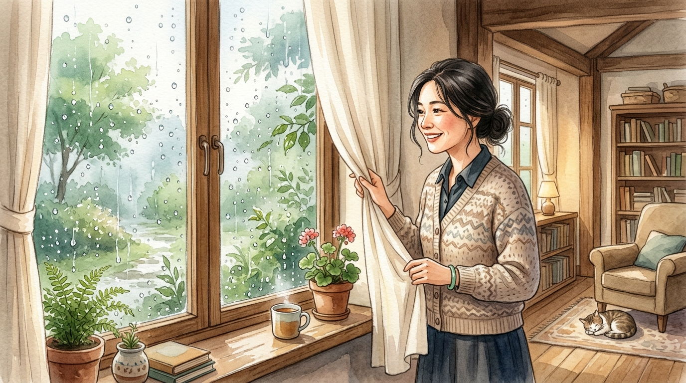
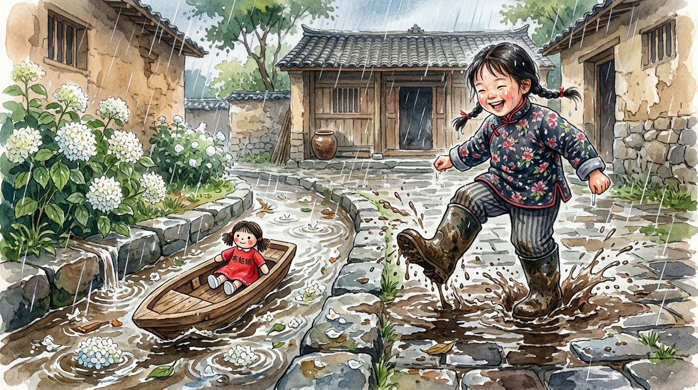
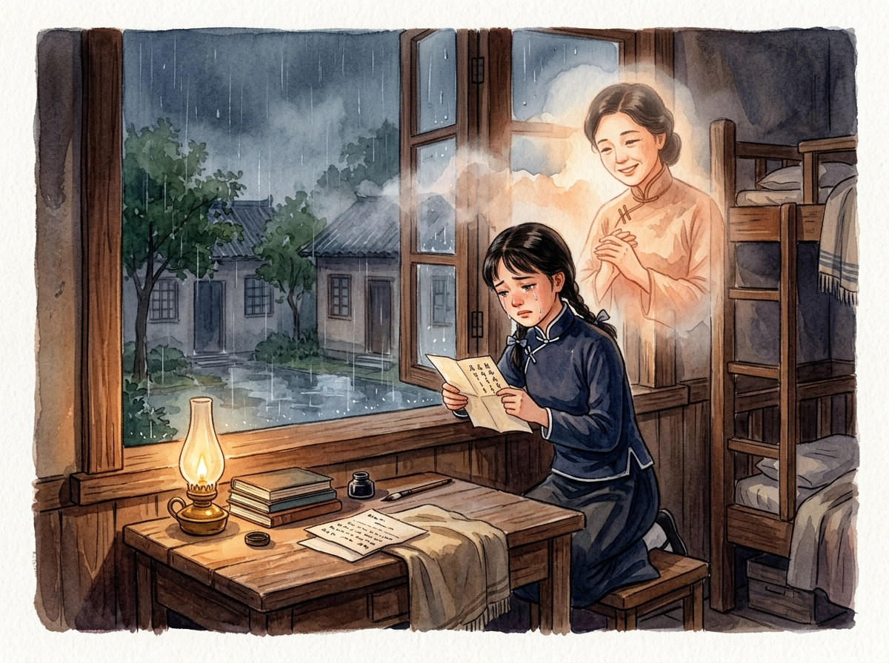
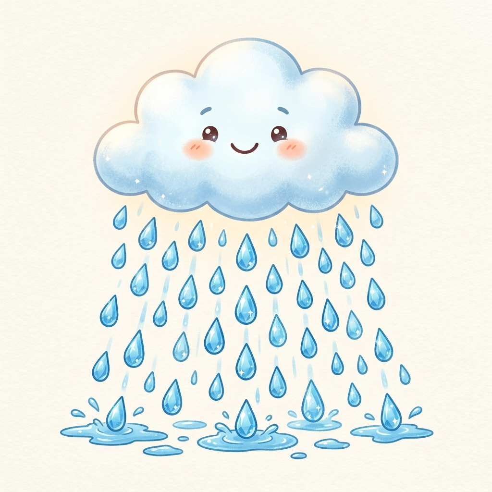

下雨天，真好
作者：琦君
1. 為什麼作者覺得「真好」？
下雨天通常溼答答、出門不便，但作者卻打從心底歡喜，因為雨天總是把她帶回魂牽夢縈的故鄉與童年歡樂。
2. 什麼是「雨珠的鍊子」？
作者巧妙地把一顆顆晶瑩的雨水，想像成美麗的項鍊，象徵把童年那些有趣甜蜜的回憶永遠串起、珍藏在手腕上。
3. 全文的核心情感是什麼？
這篇散文以「雨天」為情感線索，抒發了作者長大離鄉後，對故鄉、童年往事以及對溫柔慈祥母親的深沉懷念。

📷 段落情境視覺插圖
清晨作者掀開簾子，看見窗戶撒滿水珠，由衷讚嘆： ，又是個美好的下雨天。
🎯 本段即時理解檢核（單選題）：

📷 段落情境視覺插圖
連綿陰雨把作者帶回故鄉，讓她重新享受歡樂的 時光，並想用雨珠串在手腕上珍藏。
🎯 本段即時理解檢核（單選題）：

📷 段落情境視覺插圖
下雨天母親能多睡一會兒並在被窩講故事，母親面容慈祥，就像尊 一樣溫柔。
🎯 本段即時理解檢核（單選題）：

📷 段落情境視覺插圖
作者雨天穿大皮靴在泥地踩水玩耍，水溝漂著小木船，上面載著可愛的 一起冒險。
🎯 本段即時理解檢核（單選題）：

📷 段落情境視覺插圖
長工阿榮伯抱作者坐櫃檯吃香脆炒豆，長工們的疼愛讓她感到 又溫暖。
🎯 本段即時理解檢核（單選題）：

📷 段落情境視覺插圖
五月黃梅雨季，父親在走廊品茶賞雨，作者爬樹採下芬芳的 分送給鄰居。
🎯 本段即時理解檢核（單選題）：

📷 段落情境視覺插圖
雨天盲人先生來家中彈唱鼓詞，大家熱情款待，夜晚點起明亮的 ，全家好熱鬧。
🎯 本段即時理解檢核（單選題）：

📷 段落情境視覺插圖
颱風連日豪雨使穀倉穀子發霉，孩子們把在穀堆裡 當成最好玩的遊戲。
🎯 本段即時理解檢核（單選題）：

📷 段落情境視覺插圖
作者長大離家赴杭州念中學，每逢下雨天倚窗望雨，心中倍加思念 與溫暖的家。
🎯 本段即時理解檢核（單選題）：
📷 段落情境視覺插圖
作者在煙雨濛濛的西湖邊漫步，聽見放鶴亭傳來悠揚深情的 ，引起心靈共鳴。
🎯 本段即時理解檢核（單選題）：

📷 段落情境視覺插圖
數十年歲月流逝，西湖的笛聲依然迴盪在雨中，化為作者對故鄉永恆的 與牽掛。
🎯 本段即時理解檢核（單選題）：
請點選喇叭聆聽發音，大聲念讀 3 次。下方提供純文字以便複製練習國字筆順。

【單體象形字】＝ 一橫（天）＋ 冂（雲）＋ 丨（雨絲）＋ 4 滴雨點
口訣：一橫天，一框雲，一根雨絲落下來，四滴水珠落兩邊。
水蒸氣凝結成水滴降落下來。
窗外正下著濛濛的雨。
💡 點選上方大題小分頁進行個別練習。每次進入或重新開始都會自動隨機打散題目順序，作答完畢立即給予評分報告與錯題檢視！
請看左側情境圖片，選出最相符的正確詞語：
水蒸氣凝結成水滴降落下來。
請看左側情境圖片，選出最相符的正確詞語：
表達打從心底感到欣喜、滿意與幸福。
請看左側情境圖片，選出最相符的正確詞語：
對爸爸的稱呼，家族中的父輩長輩。
請看左側情境圖片，選出最相符的正確詞語：
對媽媽的稱呼，溫柔慈愛的女性家長。
請看左側情境圖片，選出最相符的正確詞語：
種子植物的有性繁殖器官，通常美麗芬芳。
包含【有注音念 3 次】與【無注音提示念 3 次】雙軌練習。請點選喇叭聆聽完整詞語正確發音，並完成打卡。
魂牽夢縈
【上中下結構】＝ 上【火火（兩個火）】＋ 中【冖（禿寶蓋）】＋ 下【糸（絲部）】
上面兩個火（火火），中間禿寶蓋（冖），底下絲線（糸），思念如絲線縈繞在心。
💡 點選上方測驗小分頁進入練習。每次進入或重新開始均自動隨機打散 18 題題目順序，作答完畢立即給予評分報告與錯題檢視！
請聽語音，選出正確的生字：
請聽語音，選出正確的生字：
請聽語音，選出正確的生字：
請聽語音，選出正確的生字：
請聽語音，選出正確的生字：
請聽語音，選出正確的生字：
請聽語音，選出正確的生字：
請聽語音，選出正確的生字：
請聽語音，選出正確的生字：
請聽語音，選出正確的生字：
請聽語音，選出正確的生字：
請聽語音，選出正確的生字：
請聽語音，選出正確的生字：
請聽語音，選出正確的生字：
請聽語音，選出正確的生字：
請聽語音，選出正確的生字：
請聽語音，選出正確的生字：
請聽語音，選出正確的生字：
請先點選上方詞語小卡片，即可在中央專注學習大卡片中詳細認識該詞語！卡片包含課文情境圖、詞義概念圖解、課文真實原句、新增造句例句、課本釋義與易讀版，並可自由點選 🔊 朗讀。
在那兒，我又可以重享歡樂的童年，回到魂牽夢縈的好地方。
雨天好像把我帶回了魂牽夢縈的故鄉童年。
形容極為思念，連夢中都無法忘懷。
想念到極點，連睡覺做夢都一直夢到對方，放不下心。
請先點擊左側插圖選取（藍色高亮），再點擊右側相符的課文情境句子完成配對！共 11 組段落情境，圖片皆以完整比例呈現。
清晨拉開窗簾望著迷濛雨景，玻璃窗撒滿水珠，由衷讚嘆：『下雨天，真好。』
穿著叔叔的舊皮靴在泥地踩水，小木船放上紅花布姑娘與白繡球花順水漂流。
連綿陰雨把作者帶回故鄉，簷前水珠滴在手腕上，就像戴上美麗的水晶手鐲。
雨夜大廳點亮嘶嘶煤氣燈，盲人先生打鼓拉琴唱《鄭元和》，母親感傷落淚。
清晨躺在暖和被窩聽雨聲，母親坐在床沿慈祥梳頭講故事，面容像尊菩薩。
離家赴杭州念女子中學，雨夜倚在宿舍窗前緊握母親寄來的家信，落淚思親。
長工阿榮伯把作者抱在膝頭餵香脆炒豆，作者抱著花貓坐在門檻看雨。
八月颱風大雨讓穀倉穀子發霉，孩子們興高采烈在金黃穀堆上歡喜揀綠麴。
數十年過去異鄉雨天聽雨，笛聲迴盪，化為作者對故鄉雙親永恆的思念。
五月黃梅天父親廊下品茶抽水煙，作者搬竹梯爬上玉蘭樹摘滿一籃清香白花。
二十歲漫步在煙雨西湖蘇堤，孤山放鶴亭傳來悠揚清脆的笛聲穿透時空。
請依據課文發展情節，仔細觀察各圖片與文字說明（可點擊 🔊 朗讀聆聽）。您可以「按住卡片拖曳到指定格子」，或「直接點擊卡片依序放入」。若想調整，在已放入格子的卡片上點一下即可退回待選區重排。排滿 11 個槽位後，點擊「送出排序答案」進行批改！
[拖曳或點選放入]
[拖曳或點選放入]
[拖曳或點選放入]
[拖曳或點選放入]
[拖曳或點選放入]
[拖曳或點選放入]
[拖曳或點選放入]
[拖曳或點選放入]
[拖曳或點選放入]
[拖曳或點選放入]
[拖曳或點選放入]
📦 待排序情節卡片池（共 11 張，可拖曳或點擊卡片放入）：
剩餘待排：11 張👢 套上叔叔寬大的舊皮靴踩水花，剪紅布做布姑娘放在小木船上隨水漂流
🌾 八月颱風豪雨穀倉穀子發霉，長工忙翻穀，孩子們歡天喜地滿地幫忙揀綠麴
🌧️ 清晨推開窗戶，細雨如絲從天灑落，心中由衷浮現「下雨天，真好」的歡喜
🌸 父親走廊品茶賞雨教認花草，小女孩搬木梯採滿滿一竹籃玉蘭花分送左鄰右舍
🕊️ 歷經人生二十年歲月流轉，母親已逝，西湖笛聲與雨天記憶化作永恆的眷戀與感恩
📿 雨天屋內拉起長繩晾滿衣裳，細雨如萬千小珠，串起童年無盡的美麗回憶
🏫 告別故鄉離家到杭州女中求學，雨夜倚在宿舍窗前，握著母親信箋深切思鄉
🥜 依偎在長工阿榮伯膝頭吃炒豆，聽長工說故事，抱著花貓一起看雨中麻雀
🎶 二十歲漫步西湖蘇堤細雨如煙，孤山放鶴亭傳來悠揚幽怨的深遠笛聲
🛏️ 清晨掀開竹簾望雨珠，鑽進母親溫暖被窩聽故事，讚嘆母親如菩薩般慈祥
🏮 雨夜點起明亮煤氣燈照得滿室通明，大廳聚集熱鬧聽盲人先生彈三弦唱鼓詞
包含【第一大題：課文理解與深究（全課 11 段單選大會考，共 33 題題庫隨機抽取）】與【第二大題：文學素養與延伸探究（10 題素養單選題）】。題目與每個選項皆附有專屬【🔊】語音報讀。